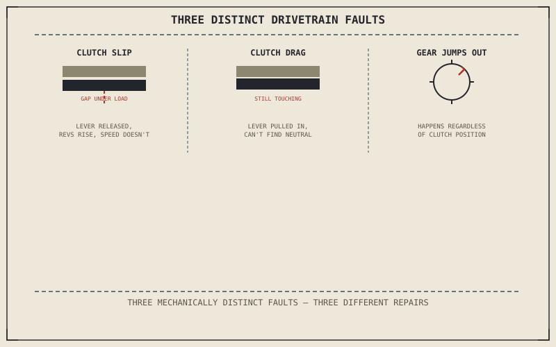

Chapters 11.2 through 11.4 covered the engine and the electrical system that keeps it running. Power still has to reach the rear wheel, and Chapter 3.2's clutch plates and Chapter 3.3's constant-mesh gearbox each fail in their own distinctive way — ways that produce symptoms specific enough to name the cause almost on their own, once you know what to listen and feel for.
Chapter 11.4 closed with the engine and electrical system both covered, pointing next to the drivetrain that carries their output to the rear wheel. This chapter opens that.
Clutch Slip: Revs Rise Without Speed to Match
Chapter 3.2 described a clutch's friction and steel plates, squeezed together to transmit engine power without slipping once fully engaged. Worn friction material reduces how much torque that squeeze can transmit before the plates start sliding against each other again, even with the lever fully released — the unmistakable symptom is an engine that revs freely under acceleration, especially in a higher gear or under hard throttle, without the road speed climbing to match. This is Chapter 3.2's "slip is the feature, not the flaw" mechanism happening at the wrong time: useful during a controlled launch, a genuine fault once it persists with the clutch fully engaged.
Clutch Drag: A Clutch That Won't Fully Disengage
The opposite fault produces close to the opposite symptom: a clutch that won't fully separate its plates even with the lever pulled all the way in, most noticeable as difficulty finding neutral at a standstill or a graunching resistance when shifting into first gear. Chapter 3.2 established the plates as spring-squeezed together by default and separated by the lever's cable or hydraulic pull; drag usually comes from that pull no longer moving the plates far enough apart, whether from a stretched cable, air in a hydraulic line, or plates that have started to warp — a fault in the release mechanism itself, rather than the friction material slip already described.
Clutch slip revs the engine without the speed to match; clutch drag won't let go of the plates even with the lever pulled in — two nearly opposite faults in the same component, distinguishable the moment you know which symptom to check for.

A diagram contrasting clutch slip, where plates separate under load despite the lever being released, against clutch drag, where plates stay partially engaged despite the lever being pulled in, alongside a worn gearbox dog jumping out of engagement under load.
Jumping Out of Gear: A Transmission Symptom, Not a Clutch One
A gear that pops back to neutral under load, particularly under acceleration or engine braking, points away from the clutch entirely and toward Chapter 3.3's constant-mesh gearbox instead. Chapter 3.3 described dogs — engagement teeth, not synchro rings — locking a specific gear to its shaft; worn or rounded dog teeth can no longer hold that engagement securely against load, and the gear kicks itself back out. Following Chapter 11.1's method, the distinguishing test is straightforward: clutch slip and drag both involve the clutch lever directly, while a gear jumping out under load happens regardless of clutch position, isolating the gearbox's internal engagement mechanism as the cause rather than anything Chapter 3.2 described.
A Common Misconception, Cleared Up Early
It's a common habit to describe any drivetrain roughness as "the clutch is going" or "the gearbox is going," treating the entire assembly as one component that either works or doesn't. Slip, drag, and a gear jumping out of engagement are three mechanically distinct faults, in two different assemblies, with three different repairs and three very different costs — and Chapter 11.1's list-then-test discipline applies exactly here: naming the specific symptom first prevents a clutch replacement from being performed on a transmission problem, or vice versa.
Where This Leads
The engine and drivetrain are now both covered. Chapter 11.6 turns to the chassis, starting with suspension and handling problems.
Key Concepts to Remember
- Clutch slip shows engine revs rising without matching road speed, from worn friction material letting the plates slide even when fully engaged.
- Clutch drag shows difficulty finding neutral or shifting into first, from the release mechanism no longer separating the plates fully.
- A gear jumping out under load happens regardless of clutch position, pointing to worn gearbox dogs rather than anything in the clutch itself.
Cross-References
| ← Ch. 3.2 | Established the clutch's friction and steel plates and slip as an intentional feature; this chapter treats unwanted slip and drag as two distinct faults in that same mechanism. |
| ← Ch. 3.3 | Established the gearbox's dog-engagement mechanism; this chapter treats worn dogs as the cause of a gear jumping out of engagement under load. |
| ← Ch. 11.1 | Established listing distinct causes before testing; this chapter separates slip, drag, and jumping out of gear as three mechanically distinct faults rather than one vague drivetrain problem. |
| → Ch. 11.6 | Covers diagnosing suspension and handling problems, turning from the drivetrain to the chassis. |